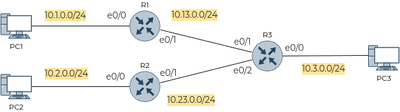
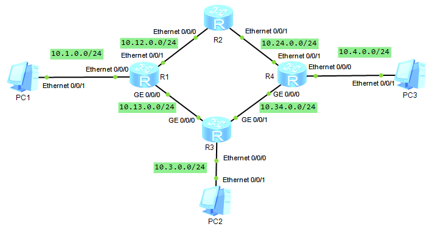
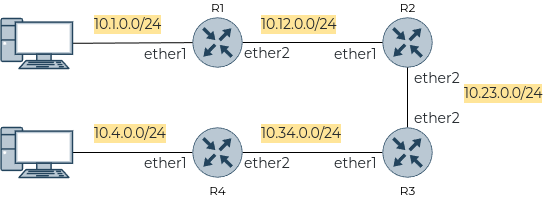
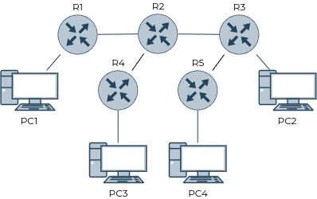

ICMP / ICMPv6
Зачем нужен протокол ICMP
Это служебный протокол, использующийся устройствами для сообщения друг другу об ошибках или о некоторых событиях.
Существует 2 популярные команды, которые используют данный протокол:
ping- проверка доступности устройства,traceroute- построение пути до адреса назначения.
Сообщения ICMP
Существует достаточно большое количество сообщений ICMP, но ниже приведены только наиболее часто встречающиеся:
Echo request- эхо-запрос,Echo reply- эхо-ответ,Timeout- время ожидания истекло,Host unreachable- узел недостижим,Network unreachable- сеть недостижима,TTL expired- время жизни пакета истекло.
В версии ICMPv6 еще можно выделить:
RS- поиск соседнего маршрутизатора,RA- объявление соседнего маршрутизатора,NS- поиск соседнего узла,NA- объявление соседнего узла.
Примеры
Пример 1 (Cisco)
Схема

Настройка
conf t
hostname R1
int e0/0
ip add 10.1.0.1 255.255.255.0
no sh
int e0/1
ip add 10.13.0.1 255.255.255.0
no sh
exit
ip route 0.0.0.0 0.0.0.0 10.13.0.3
end
wr mem
conf t
hostname R2
int e0/0
ip add 10.2.0.2 255.255.255.0
no sh
int e0/1
ip add 10.23.0.2 255.255.255.0
no sh
exit
ip route 0.0.0.0 0.0.0.0 10.23.0.3
end
wr mem
conf t
hostname R3
int e0/0
ip add 10.3.0.3 255.255.255.0
no sh
int e0/1
ip add 10.13.0.3 255.255.255.0
no sh
int e0/2
ip add 10.23.0.3 255.255.255.0
no sh
exit
ip route 10.1.0.0 255.255.255.0 10.13.0.1
ip route 10.1.0.0 255.255.255.0 10.23.0.2
end
wr mem
ip 10.1.0.10/24 10.1.0.1
save
ip 10.2.0.10/24 10.2.0.2
save
ip 10.3.0.10/24 10.3.0.3
save
Проверить таблицу маршрутизации можно с помощью команды
show ip route
Выполнить трассировку маршрута на ПК можно с помощью команды
trace {IP}
Пример 2 (Huawei)
⚠️ Необходим эмулятор eNSP.
Дополнительно о статической маршрутизации на Huawei можно почитать здесь.
Схема

Настройка
system-view
sysname R1
int e0/0/0
ip add 10.1.0.1 24
int e0/0/1
ip add 10.12.0.1 24
int g0/0/0
ip add 10.13.0.1 24
quit
ip route-static 10.24.0.0 24 10.12.0.2
ip route-static 10.4.0.0 24 10.12.0.2
ip route-static 10.4.0.0 24 10.13.0.3
ip route-static 10.34.0.0 24 10.13.0.3
ip route-static 10.3.0.0 24 10.13.0.3
return
save
system-view
sysname R2
int e0/0/0
ip add 10.12.0.2 24
int e0/0/1
ip add 10.24.0.2 24
quit
ip route-static 10.3.0.0 24 10.12.0.1
ip route-static 10.3.0.0 24 10.24.0.4
ip route-static 10.1.0.0 24 10.12.0.1
ip route-static 10.4.0.0 24 10.24.0.4
ip route-static 10.13.0.0 24 10.12.0.1
ip route-static 10.34.0.0 24 10.24.0.4
return
save
system-view
sysname R3
int g0/0/0
ip add 10.13.0.3 24
int g0/0/1
ip add 10.34.0.3 24
int e0/0/0
ip add 10.3.0.3 24
quit
ip route-static 10.1.0.0 24 10.13.0.1
ip route-static 10.4.0.0 24 10.34.0.4
ip route-static 10.12.0.0 24 10.13.0.1
ip route-static 10.24.0.0 24 10.34.0.4
return
save
system-view
sysname R4
int e0/0/0
ip add 10.4.0.4 24
int e0/0/1
ip add 10.24.0.4 24
int g0/0/0
ip add 10.34.0.4 24
quit
ip route-static 10.1.0.0 24 10.24.0.2
ip route-static 10.1.0.0 24 10.34.0.3
ip route-static 10.12.0.0 24 10.24.0.2
ip route-static 10.13.0.0 24 10.34.0.3
ip route-static 10.3.0.0 24 10.34.0.3
return
save
Проверка
Посмотреть таблицу маршрутизации на R1
[R1]display ip routing-table
Результат вывода команды
Route Flags: R - relay, D - download to fib
------------------------------------------------------------------------------
Routing Tables: Public
Destinations : 12 Routes : 13
Destination/Mask Proto Pre Cost Flags NextHop Interface
10.1.0.0/24 Direct 0 0 D 10.1.0.1 Ethernet0/0/0
10.1.0.1/32 Direct 0 0 D 127.0.0.1 Ethernet0/0/0
10.3.0.0/24 Static 60 0 RD 10.13.0.3 GigabitEthernet0/0/0
10.4.0.0/24 Static 60 0 RD 10.12.0.2 Ethernet0/0/1
Static 60 0 RD 10.13.0.3 GigabitEthernet0/0/0
10.12.0.0/24 Direct 0 0 D 10.12.0.1 Ethernet0/0/1
10.12.0.1/32 Direct 0 0 D 127.0.0.1 Ethernet0/0/1
10.13.0.0/24 Direct 0 0 D 10.13.0.1 GigabitEthernet0/0/0
10.13.0.1/32 Direct 0 0 D 127.0.0.1 GigabitEthernet0/0/0
10.24.0.0/24 Static 60 0 RD 10.12.0.2 Ethernet0/0/1
10.34.0.0/24 Static 60 0 RD 10.13.0.3 GigabitEthernet0/0/0
127.0.0.0/8 Direct 0 0 D 127.0.0.1 InLoopBack0
127.0.0.1/32 Direct 0 0 D 127.0.0.1 InLoopBack0
Посмотреть таблицу маршрутизации (статические записи) на R1
[R1]display ip routing-table protocol static
Результат вывода команды
Route Flags: R - relay, D - download to fib
------------------------------------------------------------------------------
Public routing table : Static
Destinations : 4 Routes : 5 Configured Routes : 5
Static routing table status : <Active>
Destinations : 4 Routes : 5
Destination/Mask Proto Pre Cost Flags NextHop Interface
10.3.0.0/24 Static 60 0 RD 10.13.0.3 GigabitEthernet0/0/0
10.4.0.0/24 Static 60 0 RD 10.12.0.2 Ethernet0/0/1
Static 60 0 RD 10.13.0.3 GigabitEthernet0/0/0
10.24.0.0/24 Static 60 0 RD 10.12.0.2 Ethernet0/0/1
10.34.0.0/24 Static 60 0 RD 10.13.0.3 GigabitEthernet0/0/0
Static routing table status : <Inactive>
Destinations : 0 Routes : 0
Резульатат проверки доступности R4 с R1
[R1]ping 10.4.0.4
PING 10.4.0.4: 56 data bytes, press CTRL_C to break
Reply from 10.4.0.4: bytes=56 Sequence=1 ttl=254 time=120 ms
Reply from 10.4.0.4: bytes=56 Sequence=2 ttl=254 time=50 ms
Reply from 10.4.0.4: bytes=56 Sequence=3 ttl=254 time=50 ms
Reply from 10.4.0.4: bytes=56 Sequence=4 ttl=254 time=80 ms
Reply from 10.4.0.4: bytes=56 Sequence=5 ttl=254 time=80 ms
--- 10.4.0.4 ping statistics ---
5 packet(s) transmitted
5 packet(s) received
0.00% packet loss
round-trip min/avg/max = 50/76/120 ms
Если выполнить трассировку маршрута с PC3 до PC1, то получится следующий результат
PC2>tracert 10.1.0.10
traceroute to 10.1.0.10, 8 hops max
(ICMP), press Ctrl+C to stop
1 10.3.0.3 15 ms 32 ms 15 ms
2 10.13.0.1 47 ms 47 ms 31 ms
3 10.1.0.10 78 ms 63 ms 62 ms
Получилось, что трафик идет по кратчайшему пути.
Теперь можно добавить еще один маршрут до сети, где PC1, который проходит через R4. При этом необходимо удалить маршрут на R4 в сторону сети, где PC1, который проходит через R3. На R3 также нужно удалить кратчайший маршрут либо отключить интерфейс. На R2 также нужно удалить маршурт в сторону PC2, проходящий через R1. На R1 добавить маршрут в сеть PC2, проходящий через R2.
system-view
ip route-static 10.3.0.0 24 10.12.0.2
int g0/0/0
shutdown
return
save
system-view
undo ip route-static 10.3.0.0 24 10.12.0.1
return
save
system-view
ip route-static 10.1.0.0 24 10.34.0.4
int g0/0/0
shutdown
return
save
system-view
undo ip route-static 10.1.0.0 24 10.34.0.3
return
save
Результат трассировки с PC2 до PC1
PC2>tracert 10.1.0.10
traceroute to 10.1.0.10, 8 hops max
(ICMP), press Ctrl+C to stop
1 10.3.0.3 15 ms 32 ms 15 ms
2 10.34.0.4 78 ms 47 ms 47 ms
3 10.24.0.2 78 ms 63 ms 78 ms
4 10.12.0.1 94 ms 93 ms 94 ms
5 10.1.0.10 125 ms 125 ms 109 ms
Теперь трафик проходит через "верх".
Пример 3 (MikroTik)
⚠️ Актуально для версии Router OS 7.8 stable.
По умолчанию логин - admin, пароль - { пустой }.
Схема

Настройка
/system/identity/set name=R1
/ip/address/add address=10.1.0.1/24 interface=ether1 disabled=no
/ip/address/add address=10.12.0.1/24 interface=ether2 disabled=no
/ip/route/add dst-address=0.0.0.0/0 gateway=10.12.0.2 disabled=no
/system/identity/set name=R2
/ip/address/add address=10.12.0.2/24 interface=ether1 disabled=no
/ip/address/add address=10.23.0.2/24 interface=ether2 disabled=no
/ip/route/add dst-address=10.1.0.0/24 gateway=10.12.0.1 disabled=no
/ip/route/add dst-address=0.0.0.0/0 gateway=10.23.0.3 disabled=no
/system/identity/set name=R3
/ip/address/add address=10.34.0.3/24 interface=ether1 disabled=no
/ip/address/add address=10.23.0.3/24 interface=ether2 disabled=no
/ip/route/add dst-address=10.4.0.0/24 gateway=10.34.0.4 disabled=no
/ip/route/add dst-address=0.0.0.0/0 gateway=10.23.0.2 disabled=no
/system/identity/set name=R4
/ip/address/add address=10.4.0.4/24 interface=ether1 disabled=no
/ip/address/add address=10.34.0.4/24 interface=ether2 disabled=no
/ip/route/add dst-address=0.0.0.0/0 gateway=10.34.0.3 disabled=no
ip 10.1.0.10/24 10.1.0.1
save
ip 10.4.0.20/24 10.4.0.4
save
Результат трассировки маршрута от PC1 до PC2
PC1> trace 10.4.0.20 -P 1
trace to 10.4.0.20, 8 hops max (ICMP), press Ctrl+C to stop
1 10.1.0.1 3.434 ms 1.462 ms 1.455 ms
2 10.12.0.2 6.091 ms 4.187 ms 2.215 ms
3 10.23.0.3 2.152 ms 1.944 ms 1.766 ms
4 10.34.0.4 3.667 ms 3.056 ms 2.647 ms
5 10.4.0.20 3.505 ms 3.015 ms 3.353 ms
Результат трассировки маршрута от R1 до R4
[admin@R1] > /tool/traceroute 10.34.0.4
Columns: ADDRESS, LOSS, SENT, LAST, AVG, BEST, WORST, STD-DEV
# ADDRESS LOSS SENT LAST AVG BEST WORST STD-DEV
1 10.12.0.2 0% 3 1.9ms 3.4 1.9 5.2 1.4
2 10.23.0.3 0% 3 3.4ms 4.8 2.5 8.4 2.6
3 10.34.0.4 0% 3 4.9ms 6.3 3.6 10.4 2.9
Если на R3 временно отключить маршрут в сторону PC2
[admin@R3] > ip route/print
Flags: D - DYNAMIC; A - ACTIVE; c, s, y - COPY
Columns: DST-ADDRESS, GATEWAY, DISTANCE
# DST-ADDRESS GATEWAY DISTANCE
0 As 0.0.0.0/0 10.23.0.2 1
1 As 10.4.0.0/24 10.34.0.4 1
DAc 10.23.0.0/24 ether2 0
DAc 10.34.0.0/24 ether1 0
[admin@R3] > ip route/disable numbers=1
то произойдет зацикливание маршрута, т.е. пакеты начинают блуждать от R2 до R3 до тех пор, пока не закончится TTL
PC1> trace 10.4.0.20 -P 1
trace to 10.4.0.20, 8 hops max (ICMP), press Ctrl+C to stop
1 10.1.0.1 1.273 ms 0.881 ms 0.452 ms
2 10.12.0.2 2.127 ms 1.531 ms 1.419 ms
3 10.23.0.3 4.211 ms 2.218 ms 1.810 ms
4 10.12.0.2 2.045 ms 2.220 ms 2.809 ms
5 10.23.0.3 3.957 ms 2.665 ms 2.472 ms
6 10.12.0.2 3.890 ms 2.884 ms 2.945 ms
7 10.23.0.3 3.725 ms 3.841 ms 3.192 ms
8 10.12.0.2 3.767 ms 3.561 ms 3.518 ms
❓ Из-за чего происходит зацикливание маршрута в данном случае?
По умолчанию утилита trace в VPCS использует максимальное значение TTL = 8, поэтому вывод ограничен 8-ю строками. Если изменить максимальное значение, то результат будет другим
PC1> trace ?
trace HOST [OPTION ...]
Print the path packets take to the network HOST. HOST can be an ip address or
name.
Options:
-P protocol Use IP protocol in trace packets
1 - icmp, 17 - udp (default), 6 - tcp
-m ttl Maximum ttl, default 8
PC1> trace 10.4.0.20 -P 1 -m 4
trace to 10.4.0.20, 4 hops max (ICMP), press Ctrl+C to stop
1 10.1.0.1 0.885 ms 0.439 ms 0.506 ms
2 10.12.0.2 2.617 ms 1.898 ms 1.112 ms
3 10.23.0.3 3.426 ms 1.959 ms 2.563 ms
4 10.12.0.2 2.953 ms 2.011 ms 1.743 ms
Если активировать маршрут обратно
[admin@R3] > ip route/pr
Flags: D - DYNAMIC; X, I, A - ACTIVE; c, s, y - COPY
Columns: DST-ADDRESS, GATEWAY, DISTANCE
# DST-ADDRESS GATEWAY DISTANCE
0 Xs 10.4.0.0/24 10.34.0.4
1 As 0.0.0.0/0 10.23.0.2 1
DAc 10.23.0.0/24 ether2 0
DAc 10.34.0.0/24 ether1 0
[admin@R3] > ip route/enable numbers=0
[admin@R3] > ip route/pr
Flags: D - DYNAMIC; A - ACTIVE; c, s, y - COPY
Columns: DST-ADDRESS, GATEWAY, DISTANCE
# DST-ADDRESS GATEWAY DISTANCE
0 As 0.0.0.0/0 10.23.0.2 1
1 As 10.4.0.0/24 10.34.0.4 1
DAc 10.23.0.0/24 ether2 0
DAc 10.34.0.0/24 ether1 0
и задать при трассировке максимальное значение TTL = 2, то маршрут не будет построен до конца.
PC1> trace 10.4.0.20 -P 1 -m 2
trace to 10.4.0.20, 2 hops max (ICMP), press Ctrl+C to stop
1 10.1.0.1 1.668 ms 1.961 ms 1.666 ms
2 10.12.0.2 2.314 ms 1.583 ms 1.453 ms
Пример 4 (MikroTik + Cisco + IPv6)
⚠️ Актуально для версии Router OS 7.8 stable.
По умолчанию логин - admin, пароль - { пустой }.
Схема

Настройка
/system/identity/set name=R1
/ipv6 address add address=10:1::1/64 interface=ether1 disabled=no
/ipv6 address add address=10:12::1/64 interface=ether2 disabled=no
/ipv6 route add dst-address=::/0 gateway=10:12::2 disabled=no
/system/identity/set name=R2
/ipv6 address add address=10:12::2/64 interface=ether1 disabled=no
/ipv6 address add address=10:23::2/64 interface=ether2 disabled=no
/ipv6 route add dst-address=10:1::/64 gateway=10:12::1 disabled=no
/ipv6 route add dst-address=::/0 gateway=10:23::3 disabled=no
conf t
hostname R3
ipv6 unicast-routing
int e0/1
ipv6 add 10:23::3/64
no sh
int e0/0
ipv6 add 10:34::3/64
no sh
exit
ipv6 route ::/0 10:23::2
ipv6 route 10:4::/64 10:34::4
wr mem
conf t
hostname R4
ipv6 unicast-routing
int e0/0
ipv6 add 10:4::4/64
no sh
int e0/1
ipv6 add 10:34::4/64
no sh
exit
ipv6 route ::/0 10:34::3
wr mem
ip 10:1::10/64
save
ip 10:4::20/64
save
Проверить доступность адреса и построить маршрут можно с помощью утилит ping и trace, соответственно, указав IPv6-адреса вместо IPv4.
🧰 Лабораторная работа
Ознакомиться перед выполнением
- Вместо ❔ или
xнужно подставить свой номер по журналу - Выполнять задание без "отмашки" не стоит ⛔, т.к. задание здесь может отличаться от актуальной версии
- У каждой работы есть срок сдачи 📅, который озвучивается на занятии, после которого работа не может быть защищена на максимальный балл 📉
- Дополнительные задания 📚 не являются обязательными, но по результатам сдачи лабораторной работы может быть выдано одно или несколько из них. Также дополнительное задание может быть сформулировано устно
- Для каждой лабораторной работы должен быть отчет 📝 с описанием выполнения ваших действий, оформление должно соответствовать требованиям (см. на сайте учебного заведения)
- Нужно уметь ответить на вопросы ❓ по теме, контрольные вопросы и другие связанные вопросы
- Примеры могут быть выполнены по желанию, а также выданы в качестве дополнительного задания с изменениями или без в случае неуспешной 😢 защиты основной работы
- Иногда в работах встречаются задания по IPv4 и IPv6 одновременно 🔗. Это считается как одна работа. Допускается сдача работы только с IPv4 или только с IPv6, но максимальный балл в таком случае получить невозможно
Схема

⚠️ IPv4 и IPv6 выполнять на одной схеме.
⚠️ В качестве PC рекомендуется использовать Linux.
Условия
⚠️ Под trace понимается любая команда, выполняющая трассировку маршрута.
IPv4
- Исходная сеть IPv4 -
10.x.0.0/16. Разделить на необходимое количество (определить самостоятельно) подсетей и использовать их в схеме. - Маршрутизация - статическая.
- Где разумно использовать маршрут по умолчанию.
- Где разумно использовать суммарный маршрут.
- С помощью команды
trace(может называться по разному в разных ОС) изучить результаты трассировки маршрута. - С помощью Wireshark изучить принцип работы трассировки маршрута.
IPv6
- Исходная сеть IPv6 -
2000:x::/48. Разделить на подсети с помощью идентификатора подсети и использовать их в схеме. - Остальные условия аналогичны условиям IPv4.
📚 Дополнительные задания
- Повторить указанный пример. Использовать указанные маршрутизаторы (MikroTik, Linux, Cisco, ...). Адрес исходной сети -
10.x.0.0/20. При необходимости разделить сеть на подсети. - Повторить указанный пример. Использовать указанные маршрутизаторы (MikroTik, Linux, Cisco, ...). Адрес исходной сети -
2000:x::/48. При необходимости разделить сеть на подсети.
🤔 Контрольные вопросы
Общие
- Какой принцип работы утилиты
trace? - Какие параметры принимает команда
trace? - В чем принципиальное отличие команды
pingотtrace? - По какой причине при выполнении эхо-запроса может появится сообщение типа
timeout? - По какой причине при выполнении эхо-запроса может появится сообщение
network unreachable? - Можно ли, глядя на схему, точно предположить адреса (или сети), которые будут в выводе результата работы утилиты
trace? - Чем отличается трафик в Wireshark, создаваемый утилитой
traceи утилитойpingс TTL = 1 (устройство должно находится дальше 1 "хопа")? - Как, имея несколько таблиц с результатами утилиты
trace, построить карту сети? - Что такое рекурсивный поиск маршрута? Выполняется ли в данной работе такой поиск?
- Что такое маршрут по умолчанию?
- Для чего используется суммарный маршрут?
- Почему появляются
* * *в выводеtrace?- Привести пример схемы, когда будут появляться
* * *в выводеtrace, но при этом все устройства будут "пинговаться".
- Привести пример схемы, когда будут появляться
- Какое минимальное значение TTL необходимо в
trace, чтобы корректно построить маршрут?- Что будет, если TTL будте меньше требуемого минимума?
- Что такое цикличный маршрут?
- Чем он хорош или плох?
- Продемонстрировать цикличный маршрут.
IPv6
- Можно ли не указывать шлюз по умолчанию на ПК в случае IPv6? Почему?
- Что является аналогом ARP-запроса и ARP-ответа в IPv6?
- Для чего нужны пакеты "RA", "RS", "ND", "NS"?
Используя данный сайт и его ресурсы, вы соглашаетесь с политикой и соглашениями сайта.
©️ Оформление, изложение, медиаматериалы. И. Попов, 2020-2025
Сделано с помощью Material for MkDocs.